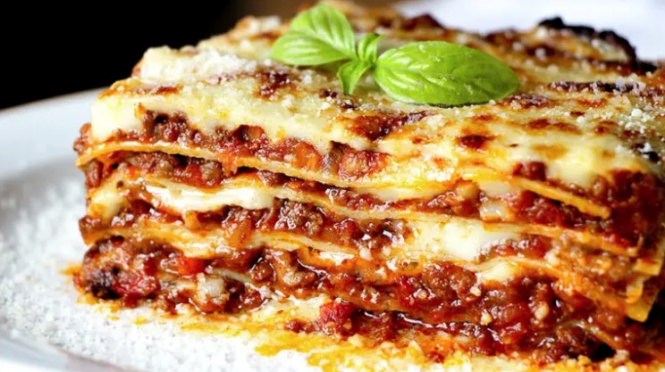

Inicio
Lasagna

Descripción
La lasaña es un tipo de pasta. Se suele servir en láminas superpuestas intercaladas con capas de ingredientes al gusto, más frecuentemente carne en salsa boloñesa y bechamel. Su origen es italiano y el plato preparado usualmente con carne suele llamarse lasaña al horno.
Ingredientes:
- Cebolla 1
- Manteca 100 g
- Leche 1.5 L
- Harina 100 grs.
- Pasta seca para lasagna 500 grs.
- Queso mozzarella en fetas 300 grs.
- Carne picada 1 k
- Ajo 1 Diente
- Espinaca 200 g
- Salsa de tomate 400 cc
- Queso parmesano rallado 200 g
- Jamón cocido 300 Fetas
- Vino blanco 1 Copa
- Nuez moscada 1 cda.
Paso a paso:
PARA LA SALSA BECHAMEL :
- Calentar en una olla la leche con la harina. Mezclar bien hasta disolver la misma.
- Agregar la manteca, sal, pimienta blanca y nuez moscada rallada.
- Revolver constantemente hasta que espese.
PARA EL RELLENO DE CARNE :
- Picar la cebolla, rallar el diente de ajo. Sudar en una cacerola con aceite de oliva
- Agregar la carne picada, sellar hasta que este cocida.
- Desglasar con el vino blanco.
PARA EL ARMADO :
- Disponer una capa de salsa de tomate en el fondo del molde.
- Intercalar capas de pasta, de carne, salsa de tomate, salsa bechamel, espinaca, jamón y muzarella.
- Terminar con una capa de salsa bechamel, con mucho queso parmesano rallado
- Llevar a horno a 180° por 10 minutos para gratinar y terminar la cocción de la misma.